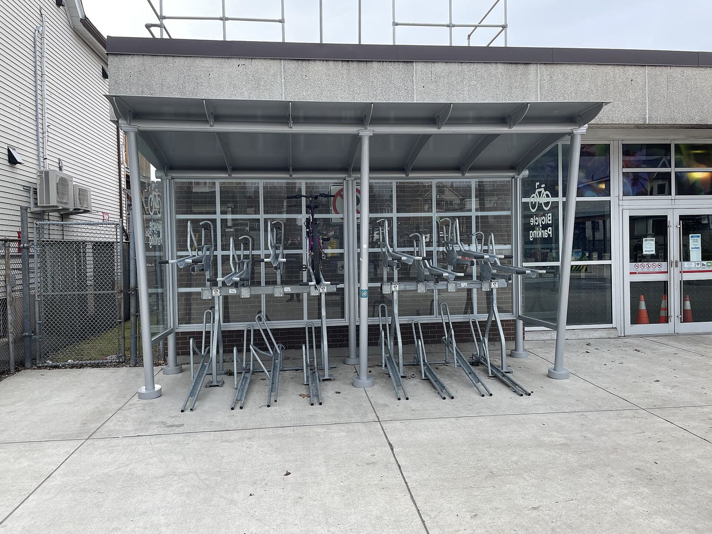

多益模擬題庫（自製・非官方）2026-11
本題庫由小R 自行撰寫，不是官方題庫，與 TOEIC 官方（ETS）沒有任何關係，也沒有使用官方題目。
Part 1 照片描述
- A A woman is standing behind containers of fresh produce.
- B A customer is loading bags into the back of a car.
- C The vegetables are being weighed on a scale.
- D The stall has been set up inside a shopping mall.
- A 正解。照片裡一位包著頭巾的女士站在攤位後方，她面前是好幾盆洋蔥、馬鈴薯、紅蘿蔔與葉菜。
- B 右前景雖然有一位模糊的顧客，但沒有人把袋子搬進車裡；背景的車輛只是停放著。load into 這種明確動作是 Part 1 最常見的憑空動作。
- C 蔬果直接裝在塑膠盆與鐵桶裡，畫面中沒有磅秤，也沒有人在秤重。being weighed 這種被動進行式同樣是誘答。
- D 這是路邊市場：水泥地面、背後是建築外牆與停放的機車，不是購物中心內部。
🔑 選項出現 loading／weighing 這種明確動作時，先回照片找那個動作；找不到就淘汰。
第一題，答案是 A。照片裡一位女士站在攤位後面，前面是好幾盆新鮮蔬果，所以她站在蔬果容器後面是對的。B 說有人把袋子搬進車裡，照片裡沒有人在做這件事。C 說蔬菜正在秤重，畫面裡沒有磅秤。D 說攤位設在購物中心裡，但這是路邊市場。

- A The parking area has been closed for renovation.
- B Several cyclists are waiting near the entrance.
- C A single bicycle is stored in one of the racks.
- D A technician is repairing the rack system.
- A 車架開放、沒有施工圍籬也沒有告示，只是幾乎沒人使用；closed for renovation 是憑空加上去的狀態。
- B 整張照片裡沒有人，更沒有在入口等待的騎士。several 這種數量詞要回照片數一遍。
- C 正解。兩層車架幾乎全空，只有一輛深色腳踏車停在上層。
- D 沒有維修人員，車架結構完整、沒有拆開或工具。
🔑 量詞就是答案：several／a single 的差別要先數清楚照片裡有幾輛車。
第二題，答案是 C。照片裡兩層車架幾乎全空，只有一輛腳踏車停在上層，所以一輛車停在車架裡是對的。A 說停車區因為整修關閉，但現場沒有施工。B 說有幾位騎士在入口等待，照片裡完全沒有人。D 說有技師在修車架，也沒有。
Part 2 應答問題
- A The workshop starts at nine.
- B The copier is out of toner.
- C Sure, I'll run them off right now.
- A 重複了題目裡的 workshop，但講的是開始時間，沒有回應「再多兩份」這個請求。
- B 聽起來相關（影印、碳粉），但題目沒說要影印、也沒問設備狀況；用同場景字彙製造的干擾。
- C 正解。run off 是「影印」，用 Sure 接受請求並立刻行動。
🔑 聽到 I'm going to need… 這種請求，答案通常是「答應＋馬上處理」。
第三題，答案是 C。對方說需要多兩份講義，run off 是影印，所以選 C，Sure 加上馬上去印。A 重複了 workshop 卻講開始時間。B 講影印機沒碳粉，但題目沒有問設備。
- A Right, the lunch was excellent.
- B From next Monday, I believe.
- C About thirty people.
- A 同字陷阱：重複 lunch，但問的是「什麼時候開始送」，答的卻是那餐好不好吃。
- B 正解。When 問時間，From next Monday 直接給起點。
- C 這是「多少人」的答案，回答 How many，與題目的時間無關。
🔑 Wh- 問句先鎖定疑問詞，再用它把選項一個一個篩掉。
第四題，答案是 B。題目問新的外燴公司什麼時候開始送午餐，B 說從下週一開始，直接回答時間。A 說那餐很好吃，重複了 lunch 卻答錯方向。C 說大約三十人，那是回答多少人。
- A The printer cartridge is in the closet.
- B It's on the third floor.
- C No, the technician can't come until Friday.
- A 重複 printer，但問的是「修好了沒」，不是碳粉放在哪裡。
- B 這是地點，等於在回答 Where is the printer，與 Yes／No 問句無關。
- C 正解。先給 No，再補理由——真考最常見的答案形式就是「否定＋原因」。
🔑 Yes／No 問句的答案常常不是一個字，而是「否定＋原因」或「不直接說 Yes 的資訊」。
第五題，答案是 C。題目問印表機修好了沒，C 說沒有，技師要到星期五才能來，是否定加理由。A 講碳粉放在櫃子裡。B 講印表機在三樓，那是在回答地點。
- A Ms. Barros usually does.
- B In the small meeting room.
- C Somewhere around forty minutes.
- A 正解。Who 問人，does 代替 takes the minutes，回答得乾淨。
- B 這是地點，回答 Where does the meeting take place。
- C 同字陷阱：minutes 在題目裡是「會議紀錄」，這裡被當成「分鐘」。
🔑 minutes 有兩個意思（會議紀錄／分鐘），聽到它別急著配「時間」的選項。
第六題，答案是 A。題目問誰負責今天的會議紀錄，A 說 Barros 女士通常負責。B 回答地點。C 是陷阱，minutes 在題目裡是會議紀錄，不是分鐘。
- A Yes, the files are alphabetical.
- B I think that would open up the space nicely.
- C No, the wall was painted last year.
- A 重複 files，但題目建議的是「搬櫃子」，不是問檔案怎麼排序。
- B 正解。Why don't we… 是建議句，答案要「附和＋理由」。
- C 看似回應 wall，但「去年漆過」不是拒絕搬櫃子的合理理由，也沒有回應建議本身。
🔑 Why don't we／How about 是建議不是問原因；答案要同意或不同意，並給理由。
第七題，答案是 B。題目用 Why don't we 提出建議，要把檔案櫃搬到後牆，B 說這樣空間會變好用，是附和加理由。A 重複 files 卻講檔案排序。C 說牆去年漆過，不是拒絕的好理由。
Part 3 簡短對話
- A A delivery that arrived damaged.
- B A problem with counting inventory.
- C A change to the warehouse schedule.
- D A training session for new staff.
- A 卡車三點才到，對話裡還沒到貨，也沒有提到損壞。
- B 正解。整段都在講掃描器無法同步、標籤缺漏，所以要改成人工清點。
- C 有提到三點到貨，但沒有人要改班表或工作時段。
- D 完全沒有提到訓練或新進員工。
🔑 主旨題抓「重複出現的詞」：sync、count、item numbers 全部指向清點。
第八題，答案是 B。兩個人從頭到尾都在講盤點的問題，掃描器沒辦法同步，標籤又不齊，只好人工清點。A 說貨送到時有損壞，但卡車還沒到。C 說倉庫班表改變，沒有這件事。D 說新人訓練，也沒有提到。
- A Label the pallets in aisle twelve.
- B Call the IT department.
- C Count some items by hand.
- D Train a new employee.
- A 標籤是「本來就缺」，她沒有要他補標籤，題目也沒有人提到要補。
- B IT 已經在處理（更新到中午才會完成），她沒有要他去打這通電話。
- C 正解。let's count those by hand 就是她的要求。
- D 對話裡沒有新人，也沒有訓練。
🔑 問「女士要男士做什麼」時，答案常是她說的那句祈使句（let's…／could you…）。
第九題，答案是 C。女士說 let's count those by hand，也就是用手工清點，這是她請男士做的事。A 說去貼標籤，但標籤本來就缺、她沒這樣要求。B 說打給資訊部門，資訊部門已經在處理了。D 說訓練新人，對話裡沒有。
- A Because the warehouse closes then.
- B Because Priya leaves at three.
- C Because the scanners will be collected.
- D To avoid counting the same goods twice.
- A 對話沒有提到倉庫三點關門。
- B Priya 只是「今晚」會把品項編號輸入系統，沒有說她三點離開。
- C 掃描器是在等系統更新，不是三點被收走。
- D 正解。她說卡車會送來同一批紙製品，不想重複計算。
🔑 原因題幾乎都有一句 because；把 because 後面的意思換成同義說法就是答案。
第十題，答案是 D。女士說卡車會送來同一批紙製品，他們不想重複計算，所以要在三點前點完。A 說倉庫三點關門，沒提到。B 說 Priya 三點離開，她只是晚上會輸入品項。C 說掃描器會被收走，也不是。
Part 4 簡短獨白
- A To explain where staff can park during repairs.
- B To announce a new parking fee.
- C To introduce a new building manager.
- D To report the results of a survey.
- A 正解。整段在講停車場整修四天，員工改停北側停車場、訪客改停路邊。
- B 訊息強調 at no extra charge（不加收費用），與「新費用」相反。
- C 沒有提到任何人的名字或職務異動。
- D 完全沒有問卷或統計數字。
🔑 目的題看第一句＋重複的關鍵字（parking garage、park、lot）。
第十一題，答案是 A。這通留言在說明地下停車場要重新粉刷四天，員工改停北側停車場，訪客改停路邊收費車位。B 說要公布新的停車費，但訊息強調不加收費用。C 說介紹新主管，D 說公布問卷結果，都沒有。
- A Park in the north lot.
- B Use the metered spaces on Harbor Road.
- C Take the shuttle from the main entrance.
- D Show their permit at the gate.
- A 北側停車場是保留給「有月票的員工」，訪客不行。
- B 正解。Visitors should use the metered spaces on Harbor Road。
- C 接駁車是讓員工往返北側停車場與大門，不是訪客的停車方式。
- D 出示證件是給有月票的員工，訪客沒有 permit。
🔑 人物對應題：聽到 employees 與 visitors 兩種人，就要把規則分別記清楚。
第十二題，答案是 B。訊息說訪客要使用 Harbor Road 上的收費車位。A 說停北側停車場，那是保留給有月票的員工。C 說從大門搭接駁車，接駁車是給員工往返停車場用的。D 說出示停車證，訪客沒有停車證。
- A It stops running at six o'clock.
- B It costs two dollars per ride.
- C It is only for visitors.
- D It runs every fifteen minutes.
- A 是晚上七點收班，不是六點——把 7 換成 6 是這類題最常見的數字偷換。
- B 訊息沒有提到接駁車要收費。
- C 接駁車是給員工來往停車場，不是給訪客。
- D 正解。every fifteen minutes，從早上七點到晚上七點。
🔑 數字題先把每個數字連到它修飾的東西（15 分鐘＝班距、7 點＝首末班）。
第十三題，答案是 D。接駁車每十五分鐘一班，從早上七點到晚上七點。A 說六點收班，其實是七點，這是把數字偷換。B 說要兩塊美金，訊息沒有提到收費。C 說只給訪客，其實是給員工。
Part 5 單句填空
______ the heavy rain, the outdoor demonstration went ahead as scheduled.
- A Although
- B Because of
- C Nevertheless
- D Despite
- A Although 後面要接完整句子（主詞＋動詞），這裡只有名詞片語 the heavy rain。
- B 意思相反：因為大雨所以照常舉行，邏輯不通。
- C Nevertheless 是副詞，不能放在名詞片語前面當介系詞。
- D 正解。Despite ＋ 名詞，表示「儘管」。
🔑 空格後面只有名詞 → 只能選介系詞（despite／because of／in spite of）。
第十四題，答案是 D。空格後面只有名詞片語 the heavy rain，所以要用介系詞 Despite，表示儘管下大雨，戶外示範照常舉行。A 的 Although 後面要接完整句子。B 的 Because of 意思相反。C 的 Nevertheless 是副詞，不能這樣用。
All expense reports must be submitted ______ the last working day of the month.
- A until
- B since
- C during
- D by
- A until 指「持續到某時」，submit 是一次性動作，不能「持續繳交到」某一天。
- B since 接時間起點、用於完成式，語意是「自從」。
- C during 後面接一段期間（the month），不能接「最後一個工作日」這種時間點。
- D 正解。期限用 by the last working day。
🔑 截止期限用 by；「一直持續到」才用 until。
第十五題，答案是 D。這裡是繳交期限，要用 by the last working day。A 的 until 是持續到某個時間。B 的 since 是自從。C 的 during 後面要接一段期間，不能接最後一個工作日這種時間點。
Each of the branch managers ______ responsible for reviewing the quarterly figures.
- A is
- B are
- C were
- D have been
- A 正解。each of ＋ 複數名詞，動詞仍用單數。
- B 被後面複數的 managers 拉走；主詞其實是 each。
- C 同樣是複數動詞，而且句意是現在的固定職責，不需要過去式。
- D 複數助動詞，也是被 managers 誤導。
🔑 each／every／one of 後面接複數名詞，動詞還是單數。
第十六題，答案是 A。主詞是 each of the branch managers，真正的主詞是 each，所以動詞用單數 is。B 的 are、C 的 were、D 的 have been 都是被後面的複數 managers 誤導。
The new conveyor belt runs ______ than the old one and requires less maintenance.
- A quietly
- B most quietly
- C quiet
- D more quietly
- A 有 than 就要比較級，原級不行。
- B 最高級用於三者以上，而且不能接 than。
- C 形容詞不能修飾動詞 runs。
- D 正解。副詞比較級 more quietly。
🔑 than 是比較級的訊號；修飾動詞要用副詞，兩音節以上加 more。
第十七題，答案是 D。句子裡有 than，所以要用比較級，這裡修飾動詞 runs，要用副詞的比較級 more quietly。A 是原級。B 是最高級，不能接 than。C 是形容詞，不能修飾動詞。
The company ______ headquarters are in Rotterdam has opened a branch in Kaohsiung.
- A who
- B which
- C whose
- D where
- A who 指人，後面也不能直接接名詞 headquarters。
- B which 後面若要接名詞，必須是 which＋名詞的特定用法；這裡是「總部」屬於公司，要用所有格。
- C 正解。whose ＋ 名詞 ＝「該公司的總部」。
- D where 後面要接完整句子，不能直接接名詞。
🔑 空格後面是「名詞＋be 動詞」→ 幾乎都是 whose。
第十八題，答案是 C。空格後面是 headquarters are，也就是名詞加 be 動詞，表示公司的總部，所以用所有格的關係代名詞 whose。A 的 who 指人。B 的 which 不能直接接名詞。D 的 where 後面要接完整句子。
The delay will not ______ the delivery date.
- A affect
- B effect
- C effective
- D affection
- A 正解。affect 是動詞「影響」，will not 後面接原形動詞。
- B effect 多為名詞「效果」，當動詞是「促成、實現」，與句意不合。
- C effective 是形容詞，不能放在助動詞後面。
- D affection 是名詞「情感」。
🔑 affect 動詞、effect 名詞——先看空格前後需不需要動詞。
第十九題，答案是 A。will not 後面要接原形動詞，affect 是影響，延誤不會影響交期。B 的 effect 通常是名詞，意思是效果。C 的 effective 是形容詞。D 的 affection 是名詞，意思是情感。
By the time the auditors arrive, the files ______ to the secure room.
- A have moved
- B will have been moved
- C will move
- D are moving
- A 現在完成式與未來的時間點 arrive 不搭。
- B 正解。未來完成被動：到那個時候檔案已經被搬完了。
- C 主動語態變成「檔案自己搬」，而且 by the time 指「在那之前完成」。
- D 進行式無法表達「屆時已完成」。
🔑 By the time ＋ 未來時間 → 未來完成式；東西是被搬的 → 再加被動。
第二十題，答案是 B。By the time 加上未來才會發生的事，要用未來完成式，而檔案是被搬的，所以用未來完成被動 will have been moved。A 的現在完成式跟未來的 arrive 不搭。C 是主動。D 的進行式沒有完成的意思。
The software is not the cheapest on the market; ______, it is the only one that supports our file format.
- A therefore
- B moreover
- C for example
- D however
- A 前後不是因果：不便宜不會「因此」成為唯一支援的軟體。
- B moreover 是附加資訊，但前句是讓步、後句才是重點，語氣是轉折。
- C 後句不是前句的例子。
- D 正解。轉折副詞，前有分號、後有逗號，正是它的標準位置。
🔑 分號＋____＋逗號 → 連接副詞；先判斷前後是因果、遞增還是轉折。
第二十一題，答案是 D。前句說這套軟體不是最便宜的，後句說它是唯一支援我們格式的，這是轉折，所以用 however。A 的 therefore 是因果。B 的 moreover 是附加。C 的 for example 是舉例。分號後面加逗號，正是連接副詞的位置。
Part 6 短文填空
看文章（Part 6 備忘錄）
第 22、24、25 題是單格選詞；第 23 題是整句插入（四個選項都是完整句子）。
To: All Staff
From: Office Services
Subject: New courier service starting 1 December
Beginning 1 December, all outgoing packages will be collected by SwiftLine Couriers instead of MetroPost. The change is expected to reduce our shipping costs by about 12 percent.
Requests must be sent ［22］ the Office Services portal before 4:00 P.M. on the day of pickup. ［23］ SwiftLine will provide prepaid labels for domestic shipments, ［24］ international shipments will still require a customs form.
Staff who send more than five packages a week should attend a short training session; the schedule ［25］ on the portal later this week. Please direct any questions to extension 2200.
Requests must be sent ______ the Office Services portal before four o'clock.
- A across
- B through
- C among
- D besides
- A across 指「橫越某個表面」，不用於系統或管道。
- B 正解。through the portal ＝ 透過這個平台送出。
- C among 指「在……之中」（三者以上），後面要接群體。
- D besides 是「除了」，語意不通。
🔑 透過系統、平台、管道一律用 through。
第二十二題，答案是 B。透過入口網站送出申請，要用 through the portal。A 的 across 是指橫越某個表面。C 的 among 是在什麼之中。D 的 besides 是除了。
Packages received after the deadline will be held for the next day's pickup.
- A The portal was introduced two years ago.
- B International shipments usually take five to seven days.
- C Packages received after the deadline will be held for the next day's pickup.
- D Please return any unused MetroPost labels to the mailroom.
- A 背景資訊，與前一句的截止時間、後一句的快遞標籤都接不上。
- B 國際件要到下一句（customs form）才談，放這裡會搶先，也重複後面的內容。
- C 正解。承接前一句的 4 點截止，說明逾時的後果，也為後面流程鋪路。
- D 跳回舊快遞的細節，時序與語氣都突兀。
🔑 插入句要同時接得住前一句、也接得上後一句；抓前後句的關鍵字（deadline／pickup）。
第二十三題，答案是 C。前一句講四點截止，這句接著說超過時間送到的包裹會留到隔天再收，後一句才開始講 SwiftLine 的標籤，所以最順。A 是兩年前的背景。B 講國際件要幾天的時間，會跟後面重複。D 跳回舊快遞的標籤。
SwiftLine will provide prepaid labels for domestic shipments, but international shipments will still require a customs form.
- A so
- B because
- C but
- D unless
- A 前後不是結果關係：國內有免費標籤不會「所以」國際要報關。
- B 因果顛倒：不是「因為國際要報關，所以國內給標籤」。
- C 正解。國內免標籤 vs 國際仍要報關，是對比。
- D unless ＝除非，句意不通。
🔑 兩個子句一正一反（國內方便／國際仍麻煩）就是 but 或 while。
第二十四題，答案是 C。前半句說國內件有免費標籤，後半句說國際件還是要報關單，這是對比，所以用 but。A 的 so 是結果。B 的 because 因果相反。D 的 unless 是除非。
The schedule will be posted on the portal later this week.
- A will be posted
- B will post
- C posted
- D has posted
- A 正解。時程表是被公布的，later this week 指未來，用未來被動。
- B 主動語態變成「時程表自己公布」，不合。
- C 過去式與 later this week 衝突。
- D 現在完成式不能接未來的時間副詞。
🔑 主詞是「物」＋公布／取消／延期這類動詞 → 先想被動。
第二十五題，答案是 A。主詞是時程表，時程表是被公布的，後面又說這週稍晚，所以用未來被動 will be posted。B 是主動。C 是過去式，跟這週稍晚衝突。D 的現在完成式不能接未來時間。
Part 7 閱讀理解
看文章（Part 7 公告）
THE TOOL SHED — A TOOL LENDING LIBRARY
Borrowing tools is free for residents of Mapleton who are 18 or older. Membership is confirmed at the front desk with a photo ID and a recent utility bill; cards are issued the same day.
Tools may be borrowed for seven days. Most items can be renewed once online, but items marked with a red dot — ladders, tile cutters and anything that runs on petrol — cannot be renewed, because they are in constant demand.
Return tools clean and with all accessories. A late fee of two dollars per day applies, up to the value of the tool. Borrowers are responsible for replacement if an item is lost or damaged beyond normal wear; the library does not charge for blades, drill bits or other parts that wear out during normal use.
Donations are welcome, but we cannot accept petrol-powered equipment, gas cylinders or anything that has been recalled.
Open Tuesday to Saturday, 10:00 A.M. – 6:00 P.M. Closed on public holidays. Workshops every second Saturday: bring a broken item and a volunteer will help you repair it.
Question twenty-six. What is the purpose of the notice?
- A To recruit volunteers for a repair workshop.
- B To explain how a tool lending service works.
- C To advertise tools for sale.
- D To announce new opening hours.
- A 工作坊只在最後一句順帶一提，而且說的是「帶壞掉的東西來」，不是招募志工。
- B 正解。全文依序說明會員資格、借期、續借、罰款、捐贈與開放時間。
- C 借用是免費的，全文沒有販售任何工具。
- D 有列出開放時間，但沒有說是「新的」時間，也不是全文重點。
🔑 目的題先看標題與每一段的第一句，再問「這篇想讓讀者做什麼」。
第二十六題，答案是 B。整篇在說明這個工具借用服務怎麼運作，包括會員資格、借期、續借、逾期費用跟開放時間。A 說招募工作坊志工，但工作坊只是最後順帶一提。C 說賣工具，其實是免費借用。D 說公布新的開放時間，文章沒有說這是新的。
Question twenty-seven. What is NOT required to become a member?
- A Proof of address.
- B A photo ID.
- C Payment of a membership fee.
- D Being at least 18 years old.
- A 需要：a recent utility bill 就是地址證明。
- B 需要：with a photo ID。
- C 正解（題目問「不需要」）。居民且滿 18 歲即可免費辦證，沒有會費。
- D 需要：who are 18 or older。
🔑 NOT 題先把文章明確提到的條件逐一打勾，剩下那一個就是答案。
第二十七題，答案是 C，題目問的是不需要哪一項。文章說借用免費，只要滿十八歲的居民帶著有照片的證件和最近的水電帳單，當天就能辦證，所以不需要繳會費。A 的地址證明就是水電帳單。B 的證件需要。D 滿十八歲也需要。
Question twenty-eight. Why can't some tools be renewed?
- A They are too valuable to leave the building.
- B They contain petrol that must be drained.
- C They are needed by too many borrowers.
- D They are being replaced.
- A 文章沒有說高價值的工具不能借出，紅點工具照樣可以借七天。
- B petrol 只是被點名的類別之一（會動用汽油的工具），沒有說要洩油。
- C 正解。because they are in constant demand ＝ 需求一直很高。
- D 文章沒有提到汰換。
🔑 推論題抓因果句的 because，再把 in constant demand 換成「很多人要用」。
第二十八題，答案是 C。文章說標紅點的工具不能續借，因為它們的需求一直很高，也就是很多人在借。A 說太貴不能帶出館，文章沒這樣說，紅點工具一樣可以借七天。B 說要把汽油漏掉，文章只說那是會用汽油的工具。D 說要被汰換，沒有提到。